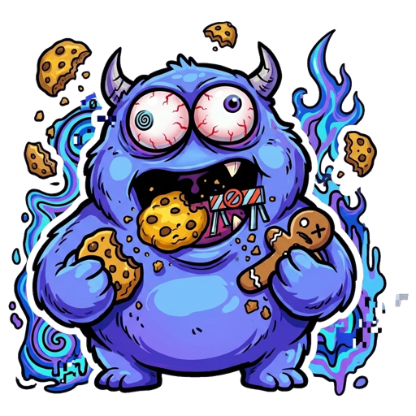

Cookie Munch
Says no to cookie banners in Safari, and hides the ones it can’t decline. It never clicks Accept.
- Open Safari Settings → Extensions.
- Tick Cookie Munch.
- Click Edit Websites…, then set Other Websites to Allow.
Cookie Munch is on in Safari.
Cookie Munch is off in Safari right now.
- Open Settings → Apps → Safari → Extensions.
- Tap Cookie Munch and turn on Allow Extension.
- Under Permissions, set All Websites to Allow.
Then browse as usual. Cookie Munch’s button in Safari shows what it did on each page.